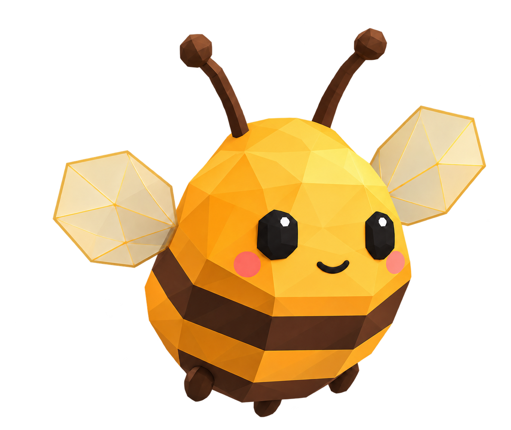

Жужа · объёмный разворот
Пробный полёт над сотами. Бок и спина достроены для проверки; их внешний вид ещё нужно согласовать.
0°

Одобренный рисунок для сравнения. Объёмную версию сверяем по форме, лицу, граням и крыльям.
Это отдельный прототип: 32 ракурса настоящей объёмной модели. Основная игра пока использует одобренные спрайты. Корона, наряды и моргание в этом образце ещё не перенесены.